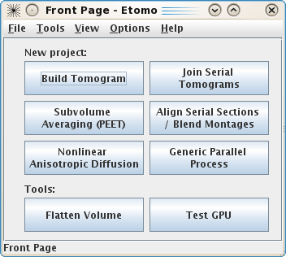
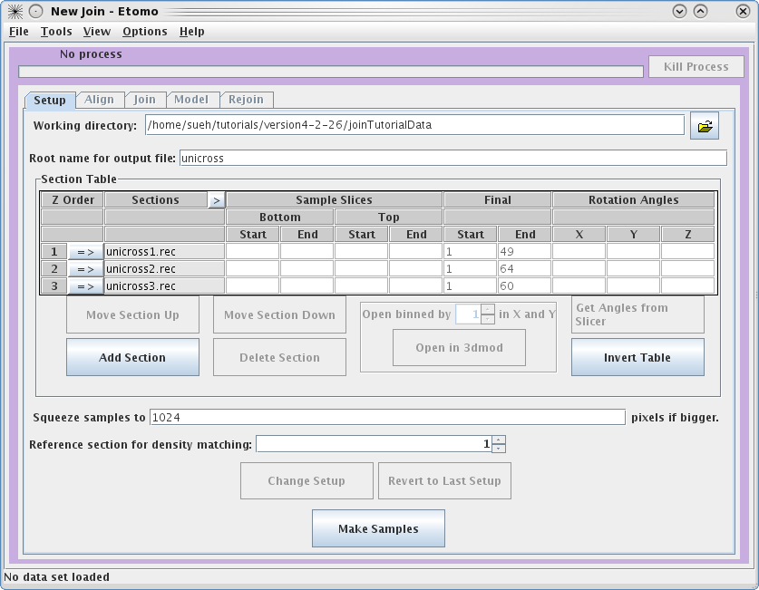
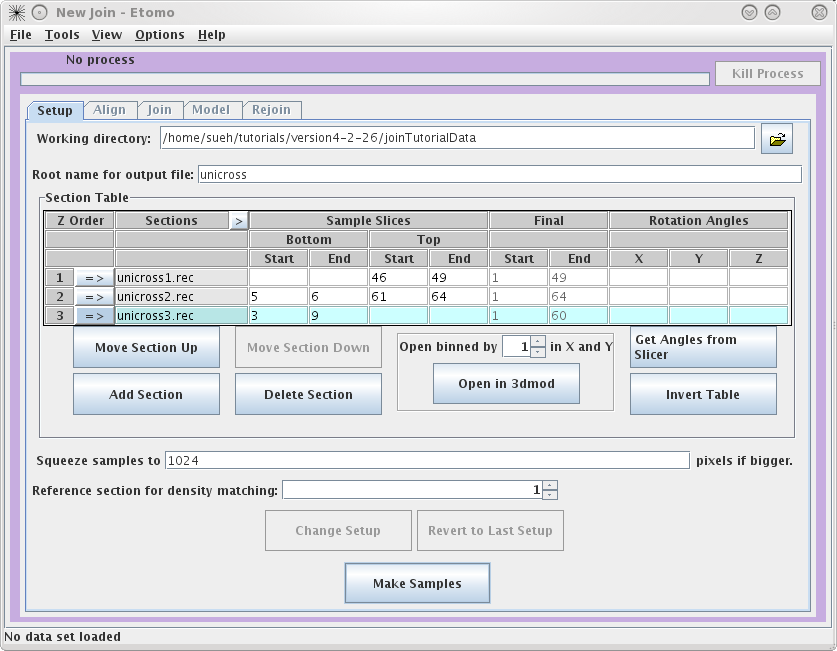
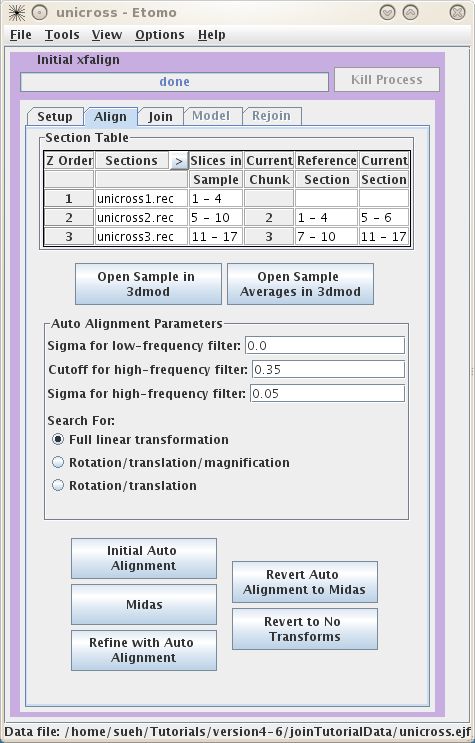
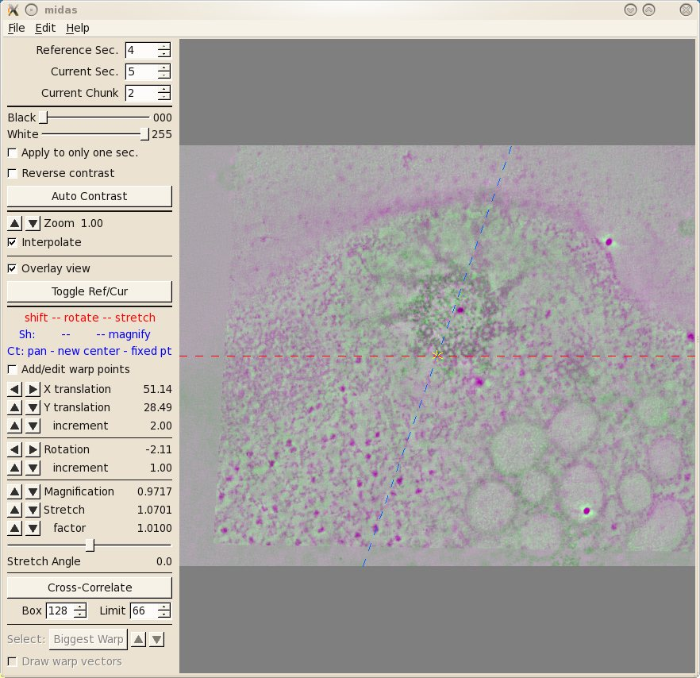
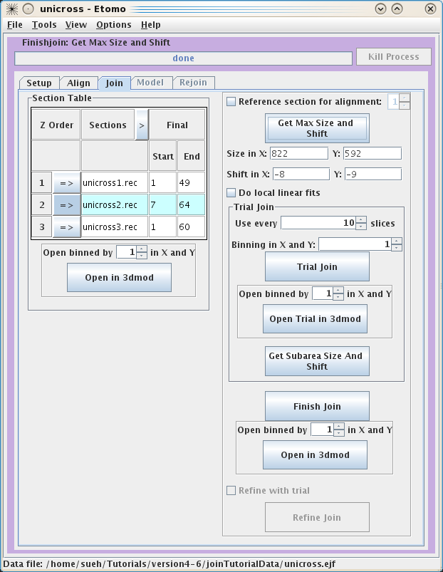
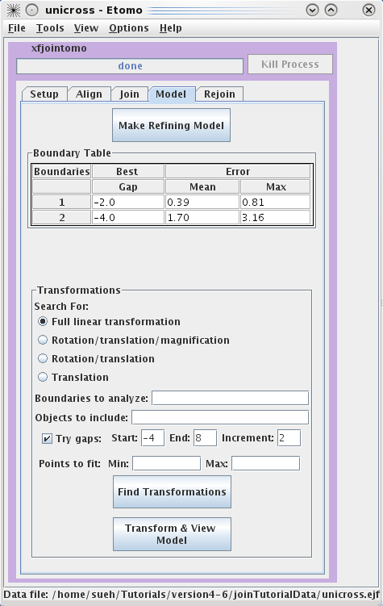
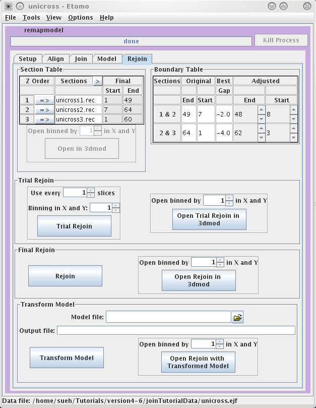

Tutorial for Joining Serial Section Tomograms with eTomo
(IMOD Version 4.5)
Cindi
L. Schwartz
Boulder Laboratory for 3D Electron Microscopy of
Cells
I. Initial
steps
This tutorial provides a step-by-step guide to
joining together tomograms from serial sections, using a small sample data set
containing three volumes to be joined. Before you try to join your own
tomograms, please refer to the more comprehensive
Guide
to Joining Tomograms for additional detail about the decisions and
options at each step.
To get started,
download the sample data set from our web site. Unpack the data
by typing:
tar -xzf joinTutorialData.tar.gz
This will create a directory, joinTutorialData, containing the
three serial volumes, named basal-1.rec, basal-2.rec, and basal-3.rec.
II. eTomo Setup
To start eTomo, at the command line
type: etomo
This will load the eTomo's Front
Page. To get to the join setup page press the Join Serial Tomograms button.

This will load the Join Interface shown below. The interface is divided
into five panels: Setup, Align, Join, Model, and Rejoin. The Setup panel allows you to
identify which serial tomograms you would like to join, define the surfaces at
which they should be joined, flip or rotate the volumes relative to each other,
and extract sample slices from each serial tomogram so that you can visualize
the boundaries between the serial tomograms and align them. You will notice that
you cannot use the Align
or Join tabs
until you have finished filling in the Setup information and make your sample
file.

To
get started, select your Working directory and Root name for output file.
In this example, we used a directory called JoinTutorialData and used unicross for the root name.
You can enter the
Working directory
by clicking on the yellow file selection button associated with the Working
directory field, or by typing in the directory path and file name
directly in the field. Since you already have all of the individual
reconstructions in the joinTutorialData directory, your can make
that be your working directory.

Next, you need to select the serial tomograms you
want to join by pressing the
Add Section
button. It will take you to your
Working directory
and allow you to select a file for joining. (Note that you are not required to
put your serial tomograms in your working directory. eTomo will keep track of
where your files are located). You must add each serial tomogram individually.
The initial order is not important because you can change the order later.

Once you have input all three datasets, click on the
arrow in the Z
Order
subsection to
highlight unicross1.rec. Now click
on the Open in 3dmod button. This will open unicross1.rec using 3dmod. These tutorial datasets are
small in size; however, for future data, you may need to use the binning option
to view all of your serial tomograms at once. Now, open the other two serial
tomograms with the Open in
3dmod button. Once all three tomograms are loaded, you will typically
movie through them to figure out the order of the serial tomograms and what
slices you would like to use to create the samples that are used in the aligning
process. It is important to note that Bottom and Top are used in the join software to denote that the
'top' of the section is the part of the tomogram that matches up with the
'bottom' of the next section. 'Top' and 'bottom' DO NOT refer to the high Z and
low Z portions of the tomogram. So, the top of a section can be at either high
or low Z. The join programs will take care of any inversions in Z, both in
extracting sample slices and in assembling the final volume. The 'Bottom' entry
in the first row and the 'Top' entry in the last row are not necessary because
they don't match up to another tomogram. To determine the Sample Slices you need,
see the entries we have used below. The goal here is to find a small subsection
of the ends of each serial tomogram that you can use to align. Note that the
Bottom of
unicross2.rec starts at Z= 5. This is becausethe gold on the surface does not
give you any information to align with, so you need to go deeper into the
tomogram. You can also select the slices that represent the Final Start and Final End of each tomogram
now, but you will get a chance to change this later on in the Join tab. These
numbers determine which slices will be placed into the final joined
volume.

Once you are satisfied with your decisions, press the Make Samples button. This
creates unicross.sample which will be used in conjunction with Midas to visually align
the serial tomograms together. After unicross.sample is created, you can now
access the Align and
Join tabs. You will
notice that you can always come back and use Change Setup to pick new Sample Slices and start
over.
III.
Aligning the Sample Slices
The
Align
tab allows you to align the serial tomograms before joining them together. It
is a good idea to
Open Sample Averages in
3dmod. By toggling through Z, you can see whether you have chosen the correct
Sample
Slices. For instance, toggle between Z=1 and Z=2. You can see these are a close match by
looking at the cluster of vesicles in the lower right corner, but they are not
aligned to each other. Now you can choose to try auto alignment or manual
alignment of the serial tomograms. These tutorial tomograms lend themselves
well to auto alignment. Click on
Initial Auto Alignment
and wait for
done
to appear in the process bar. Now, click on
Midas. This will load the program midas
which allows you to see how well the auto alignment worked.

The first thing you will see inMidas is an overlay view
showing contrasting magenta and green colors that help you align images. What is
first displayed is the 'top' of unicross1.rec aligned with the 'bottom' of
unicross2.rec. Midas considers each tomogram as a single 'chunk' of slices, so
it is actually showing the alignment of the bottom of 'chunk 2' to the top of
'chunk 1'. You can use the Toggle Ref/Cur button to see the alignment better by toggling between the images, and the PageUp and PageDown
keys can also be used to see one image at a time. If the sample slices being
displayed do not have a clear image of the structures at the surface of the
volume, then you can step deeper into either section by reducing the Reference Sec. number or
increasing the Current
Sec. number. The Reference Section remains fixed and the Current
Section is shifted relative to this to align the two images. Midas lets you shift, rotate, or stretch the
Current Section with the left, middle, and right mouse buttons,
respectively. Alternatively, the arrow buttons on the left panel in Midas
will perform the same functions. To advance to the next alignment pair, make the Current Chunk 3 to align
the next pair of tomograms.

Now you see the 'top' of unicross2.rec aligned with the
'bottom' of unicross3.rec. You can also try and manually improve this alignment.
If you make changes you want to keep, be sure to save them under File-Save Transforms.
If
you make changes and realize that they aren't as good as the auto alignment, you
can always use the Revert
to No Transforms button and start over.
IV.
Joining the Serial Tomograms
Once you are happy with the alignments, you can now move to
the Join tab. First,
you can pick the starting and ending slices of each serial tomogram you would
like to keep for the final volume if you did not enter these in the Setup page.
Again, you are given the option to view each tomogram by using the Open in 3dmod button.
These serial tomograms provide an example where using the Get Max Size and Shift
button can be useful. The program will calculate the Size and Shift in X and Y required to keep all
original data in the final volume and automatically put the numbers in the
proper fields. Now you can use the Trial Join button to get a very quick idea of what
your final volume will look like. This is very useful with larger datasets
because the join process can take a long time. Once the Trial Join is finished,
Open Trial in 3dmod
to view it. The Get Subarea
Size And Shift button is used if you wish to crop the final volume to a
particular area with the rubberband feature in 3dmod. If you are happy with your
Trial Join, click Finish Join to create your final volume. This could
take a long time depending on the size of your original datasets. Once the
program has finished, use Open in 3dmod to see your final volume called
basal.join. Again, there is no need to use the binning feature with these data,
but it will likely be necessary for real datasets. Often, it is necessary to
improve the alignment of the serial section join using a refining model
described in the following section.

V. Making a fiducial model to improve the alignment of serial
tomograms
Creating the fiducial model
If the alignment from the previous step needs further
refinement, this can be done using the series of steps described in this
section. After finishjoin has created the serial
section join, the Refine Join button will become
available. Press this button and then proceed to the Model tab.
The goal of creating a refine model is to identify a set
of corresponding features that span across the serial tomograms and to
model and use these features as alignment markers to improve the
alignment. The fiducial model can be built o the final joined file or a
binned trial join file that contains all of the slices. In the
following example, microtubles and vesicles (or
membrane compartments) are used
to create the fiducial model.
Press the Refine Model button to open the joined tomogram in
3dmod. This will also open a model that has one object assigned as an open
countour object.
Micotubules are useful alignment features that span
as trajectories between serial tomograms. Data from trajectories, such
as microtubules, are used to determine a pair of
positions at a boundary between two sections, each position determined by
extrapolating the trajectory on each side of the boundary. It is important to
use enough points on each side of the boundary so that the trajectory can be
extrapolated appropriately. It is useful to use the
slicer window to model microtubule trajectories across the serial tomogram
boundaries. Open the slicer window by hitting the \ hot key or
select Image-Slicer from the 3dmod main menu. The window on the left
shows a basal body cross section in the slicer window. Highlight
the middle of a microtubule using the left mouse button. Rotate the
x,y and z sliders so that the microtubule appears in longitudinal view. In this
example, the sliders were adjusted to 72.6, 178.9 and -172.1,
respectively. Place model points along the length of the microtuble
using the middle mouse button as shown by the green line. Create a
new contour for each new microtubule.
Features,
such as vesicles,
can also be modeled as pairs of points to specifiy the centers of
the object that
should
align across a boundary. Create a new object by selecting Edit-Object-New
and assign the object type as a scattered point object. Adjust the spherical
point size so that the diameter of the sphere fits the vesicle. Place one model
point in the center of the vesicle on one boundary and one point in the center
of the vesicle on the other boundary. In the example below, the boundaries of
the serial tomogram were on sections 104 and 116, respectively. Make a new
contour for each new vesicle. Save the model after modeling
a number of features that span the serial section boundaries.
Finding transformations
By default, a full linear
transformation using all model objects and all boundaries is selected.
This is appropriate as long as you have at least 6
features well-distributed over the whole area. Otherwise, you should
select a more restricted transformation with the radio buttons.
Searching for the best gap between sections is also selected by default, and
should be used if there are some oblique trajectories (ones that do not run
perpendicularly through the sections). Otherwise, you should uncheck
Try gaps. Hit the Find Transformations button. The Boundary Table will update with the mean and maximum error of the fit
over all points at a particular boundary. The table will also report the best
gap to adjust the spacing between tomograms for the best fit.

Press the Transform & View Model to see the fiducial
model transformed into alignment. If the aligned model looks smooth (the
trajectories are not kinked), proceed to the Rejoin tab to join the tomograms with the refined
alignment.
Rejoining with Refining Transforms
The Rejoin panel contains
a Section Table to adjust which slices will go into the new
volume. The Boundary Table reports the adjusted section slices
if gaps were found.

A Trial Rejoin of the joined
tomogram can be run using the adjusted start and end values and the Trial
Rejoin can be opened in 3dmod. If you are happy with the alignment
press Rejoin to apply the refined alignment to all slices.
Open Rejoin in 3dmod to view the final, joined tomogram. Transform
Model can be used to transform the fiducial model used for
refining so it fits on the final, joined tomogram, or it can be used to
transform any other model built on the original joined tomogram. Select the
Model File, specify an Output file
name and then press Transform Model. Finally, press
Open Rejoin with Transformed Model to view the final, joined
tomogram with the realigned model.